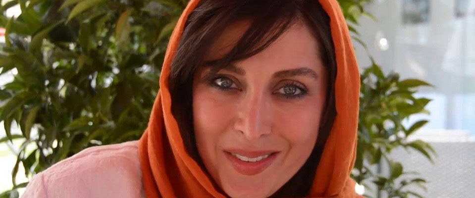
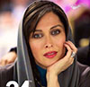
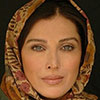

مهتاب کرامتی (۲۵ مهر ۱۳۴۹، تهران) بازیگر، تهیهکنندهٔ فیلم، کنشگر حقوق کودکان، بشردوست و مدیر هنری ایرانی است که از ۱ سپتامبر ۲۰۰۶/ ۱۰ شهریور ۱۳۸۵ تاکنون سفیر حسن نیّت و صلح از سوی یونیسف میباشد.[۱][۲][۳][۴]
او دانشآموختهٔ میکروبیولوژی، دورهدیدهٔ ۱۳۷۵ امین تارخ، از ۱۳۷۶ با بازی در مردان آنجلس به تلویزیون درآمد و آوازه گرفت،[۵] مردی از جنس بلور (۱۳۷۷) نخستین حضورش در سینماست و در ۱۳۸۰–۸۱ نمایشهایی در تئاتر به کارگردانی مجید جعفری اجرا نمود.[۶]
کرامتی نقش اصلی زن را در شماری از فیلمهای درام ایرانی و تاریخی بازی نموده، کارنامهٔ بازیهای درخشندهٔ او دربرگیرندهٔ نقشآفرینیهای فیروزه در بیست (۱۳۸۷) که برای آن سیمرغ بلورین بهترین بازیگر نقش مکمل زن از ۲۷امین جشنواره فیلم فجر گرفت، آسیه در آلزایمر (۱۳۸۹)، آوا در زندگی خصوصی آقا و خانم میم (۱۳۹۰)، رؤیای فرزند چهارم (۱۳۹۱)، سارا در اشباح (۱۳۹۲)، منیره در عصر یخبندان (۱۳۹۳)، مادر در ماجان (۱۳۹۳) و مینوی جاده قدیم (۱۳۹۶) میباشد. از نقشهای ماندگارش در تلویزیون پس از هلن در مردان آنجلس (۱۳۷۶)، شخصیت لیالی در مجموعهٔ تلویزیونی خاک سرخ (۱۳۸۰-۱۳۷۹) ساختهٔ ابراهیم حاتمیکیاست که در کنار پرویز پرستویی نقش آفرید. دیگر بازیهای او در فیلمهای مرد بارانی (۱۳۷۸) که برای آن نامزد بهترین بازیگر نقش اول زن در ۱۸امین جشنواره فیلم فجر شد، پاداش سکوت (۱۳۸۵)، تردید (۱۳۸۷)، اسب حیوان نجیبی است (۱۳۹۰)، ناخواسته (۱۳۹۲)، ارغوان (۱۳۹۳) و مزار شریف (۱۳۹۳) بودهاست.[۷]
در سال ۱۳۹۳ از پرکارترین ستارههای سینمای ایران نام گرفت، در ۱۳۹۵ با سرمایهگذاری روی مستند واقعی صفر تا سکو وارد تهیهکنندگی فیلم شد. کرامتی جز در حقوق کودکان و همکاری با یونیسف، از کنشگران حقوق زنان و امور اجتماعی آنان است، به مدیریت هنری و داوری روی آورده، به دکلمهخوانی پرداخته و در صنعت پوشاک و طراحی مد نیز فعالیت دارد.
